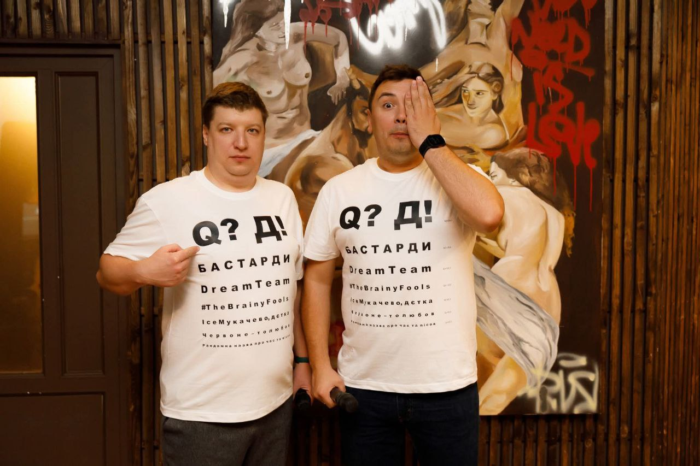
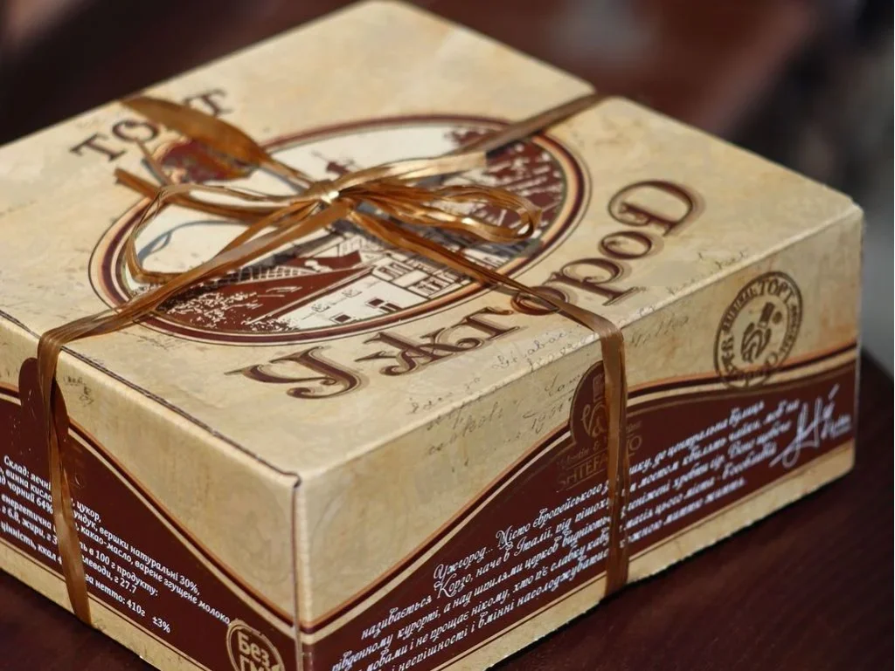
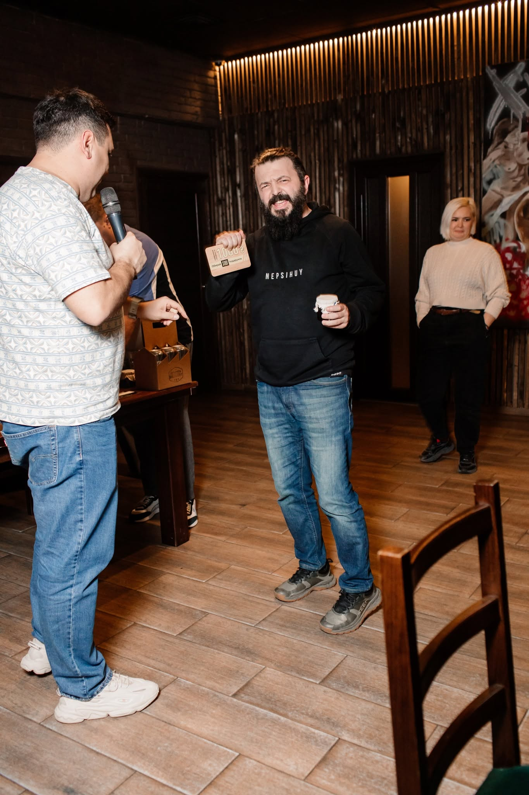

BELFAST RESTOPUB ПРАЦЮЄ БЕЗ ІНТЕЛЕКТУАЛЬНИХ ІГОР УЖЕ
{{ daysWord }} БЕЗ SHO? ШО? SHOW!
точніше — {{ precise }}. Але хто рахує? Ми. Ми рахуємо.
Кнопки не викликають гру автоматично. На жаль.
{{ missedWord }}, якби все було нормально
{{ questionsWord }}
{{ iqWord }} середньостатистичною командою
літрів пива випито без жодного інтелектуального приводу
{{ cakesWord }} «Ужгород» не вручено призерам
Востаннє їх бачили з мікрофоном у руках. Далі — тиша.

Прикмети: футболки з назвами команд, підозріло гарний настрій. Обвинувачення: зберігання питань без наміру їх поставити — уже {{ daysPhrase }} поспіль.

Крім ведучих, єдиним незмінним артефактом кожної гри був торт «Ужгород» — для всіх призових місць.
Спонсори мінялися, питання мінялися, паби мінялися. Торт — ні.
Топ-донатер банки на ЗСУ. Майже щогри — найбільший внесок. Тепер його гроші просто лежать на картці, як ніколи раніше.

{{ daysPhrase }} без банки, без сертифіката від спонсорів і без нагоди перевести суму з красивими цифрами. Формально — найбільший донатер. Фактично — безробітний.
Афіші, які колись з'являлися в стрічці. Регулярно. Як зарплата.
Анонс гри №88. Дата, паб, реєстрація. Все. Ми навіть допоможемо з афішею.
DAYSWITHOUTSHOSHOSHOW.COM · НЕОФІЦІЙНО, АЛЕ З ЛЮБОВ'Ю